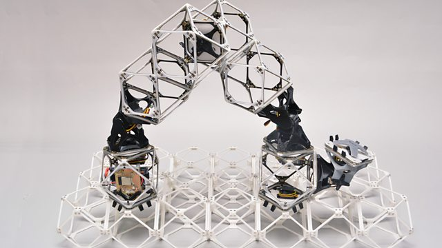

Articles
Medium - Helsing
September 2024

AI for Ukraine Recovery Hackathon
Following the announcement of our Estonian office, Helsing was proud to be the primary external sponsor of the AI for Ukraine Recovery Hackathon. Here I presented a talk on “AI acceleration for startups”.
Medium - Level Up Coding, Joseph Early
March 2023
Mastering Subplot Legends in Matplotlib
A tutorial on how to create shared subplot legends in Matplotlib. Python code provided in a Jupyter notebook.
Newsweek, Pandora Dewan
March 2023

Scientists Are Now Teaching AI How To Read Human Minds
Artificial Intelligence (AI) can read your mind... if you are hooked up to an fMRI machine and it is trained on how you process visual information.
BBC World Service - Digital Planet Podcast
November 2022
Robots that can assemble almost anything (featuring my interview on AI for predicting suicide risk)
Robots that can assemble almost anything a step closer. Also the war of words on Wikipedia; attempts at changing the narrative. Finally can AI predict suicide risk?
The Conversation, Joseph Early
October 2022

AI could help predict suicides – but rushing the technology could lead to big mistakes
AI has great potential to save the lives of mental health patients, but care must be taken to ensure it's used safely and correctly.
The Conversation, Joseph Early
September 2022

AI can produce prize-winning art, but it still can't compete with human creativity
People consider creativity to be inherently human. However, artificial intelligence (AI) has reached the stage where it can be creative as well. But could AI actually replace human artists?
Medium - Towards Data Science, Joseph Early
June 2022

Explainable AI for High-Resolution Images
AI can be used to make automated decisions based on high-resolution images, but can we understand those decisions?
Medium - Towards Data Science, Joseph Early
June 2022

Mastering Inset Axes in Matplotlib
Inset axes are a fantastic (and often underutilised) tool in Matplotlib. In this article, I go through the basics of using inset axes, and then give extra details on how to customize and improve your plots.
YouTube - Joseph Early
May 2022

Three Minute Thesis - 2022 Southampton Engineering Heat Entry
The Three Minute Thesis (3MT) competition celebrates the exciting research conducted by PhD students. This my winning entry to the 2022 Southampton Engineering Heat.
Medium - Towards Data Science, Joseph Early
March 2022

Understanding the Outputs of Multi-Layer Bi-Directional LSTMs
In this short tutorial, I break down the outputs of Multi-Layer Bi-Directional LSTMs, with an example of how to do so in PyTorch.
Medium - Predict, Joseph Early
February 2022

Can AI solve the world’s hardest Go problem?
Igo Hatsuyoron 120 is the hardest Go problem in the world. Let's explore the most recent developments in applying AI to this problem.
Medium - Towards Data Science, Joseph Early
July 2020

The Potential of Gated Linear Networks for Online Learning
A recent publication from DeepMind brings an interesting new take on sample-efficient online learning.
Medium - Towards Data Science, Joseph Early
June 2020

How to create Latex tables directly from Python code
Copying tables of results from the console into a Latex report can be tedious and error fraught — so why not automate it?
Medium - The Startup, Joseph Early
February 2020

What's hot in Multi-Agent Systems?
Multi-Agent Systems research has been a long standing topic in AI, but what are AI researchers in the UK currently working on?
Medium - Towards Data Science, Joseph Early
December 2019

The Biggest AI Risk of the Next Decade is not a Robot Uprising
Grand generalisations about the future impacts of artificial general intelligence overshadow the more pressing issues we face today.
Medium - Towards Data Science, Joseph Early
December 2019

Reproducible Data Science using Kaggle and GitHub Actions
This tutorial demonstrates how to integrate Kaggle with GitHub actions to enable better reproducibility of data science projects.
Medium - Towards Data Science, Joseph Early
September 2019

Your Car May Not Know When to Stop - Adversarial Attacks Against Autonomous Vehicles
Autonomous vehicles present a utopian dream of high-speed, clean and efficient transportation, but the computer vision systems at their core are susceptible to adversarial attacks.
Medium - Becoming Human, Joseph Early
July 2019

Real Time Image Style Interpolation
My submission to the ICLR Reproducibility Challenge: a re-implementation of "A Learned Representation For Artistic Style" (Dumoulin et al., 2016).